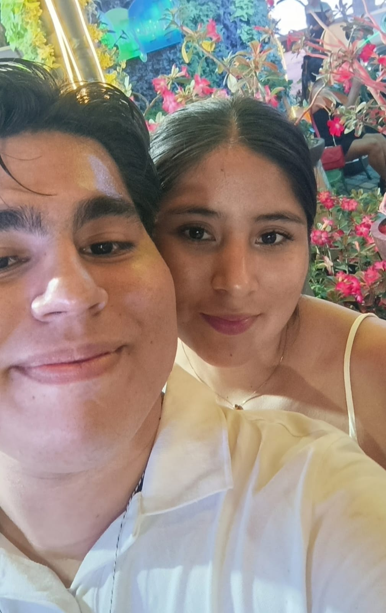
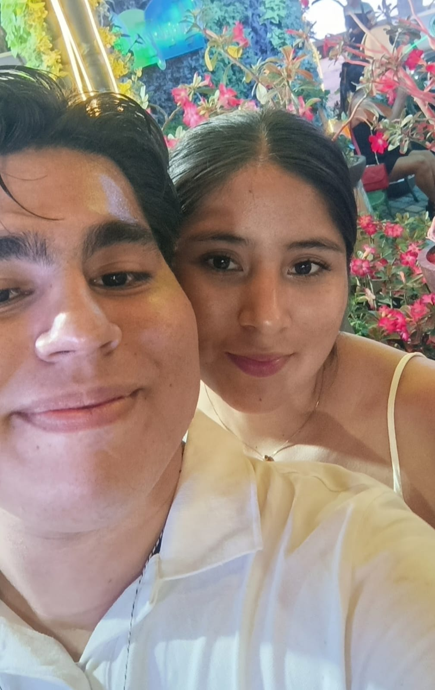

🉠Feliz Cumpleaños Amor! ğŸ‚
Mi amor Yenny, 💖✨ Hoy es un dÃa muy especial porque celebramos tu cumpleaños 🎉,te doy gracias por estos 4 años y 14 dÃas de amor, risas, y momentos que jamás olvidaré estando a tu lado como pareja. ❤️ Desde que llegaste a mi vida, todo cambió para mejor, y cada dÃa contigo es un regalo que atesoro más que cualquier cosa. 🎁 Me siento increÃblemente afortunado de tenerte como mi pareja, mi amiga y mi confidente. Eres mi sol 🌞, mi fuerza 💪 y la razón de mi felicidad. Juntos hemos superado todo y hemos crecido tanto. Estos 4 años y 14 dÃas han sido solo el comienzo de todo lo hermoso que aún nos espera. 💫 Hoy celebro no solo el milagro de tu vida, sino también lo afortunado que soy de compartirla a tu lado. 🥰 Gracias por ser mi todo, por tu amor, tu ternura y por cada momento que haces único. Te amo más de lo que las palabras pueden expresar, y siempre estaré aquà para ti. 💖💠Con todo mi amor y mi corazón lleno de felicidad, Marco 💘
 
